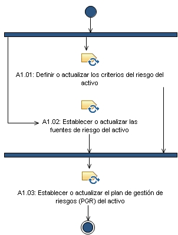

Patrón de posibilidad: A1. Planificación
Amplía:
A1. Planificación
Descripción
Estructura de desglose de trabajo
Asignación de equipos
Utilización del producto de trabajo
Flujo de trabajo

Anomalía del trabajo